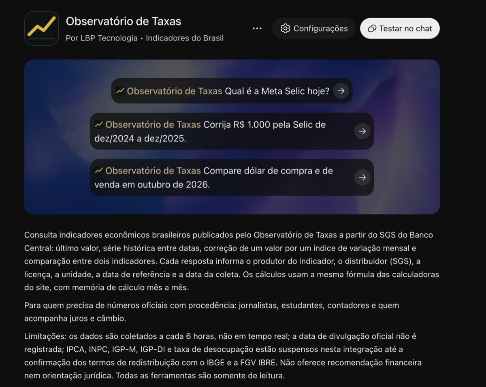
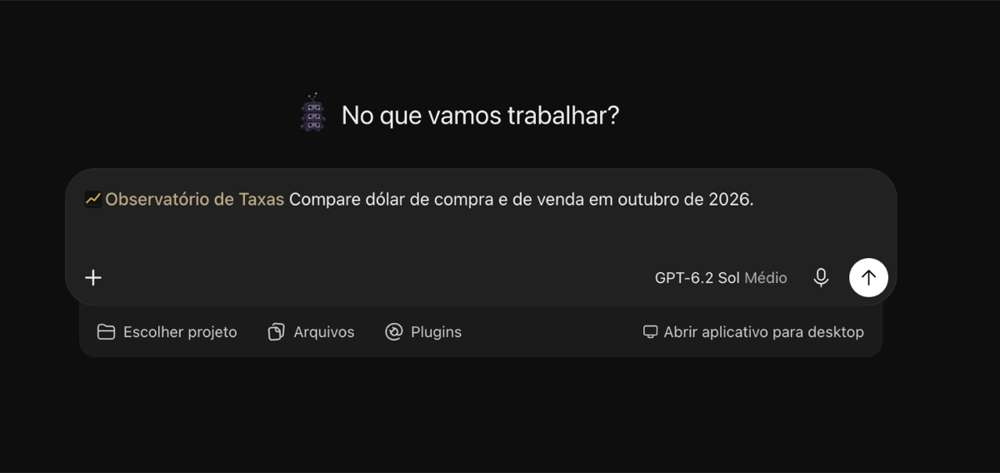
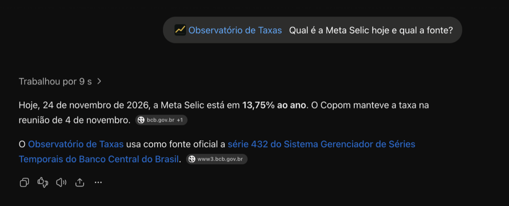
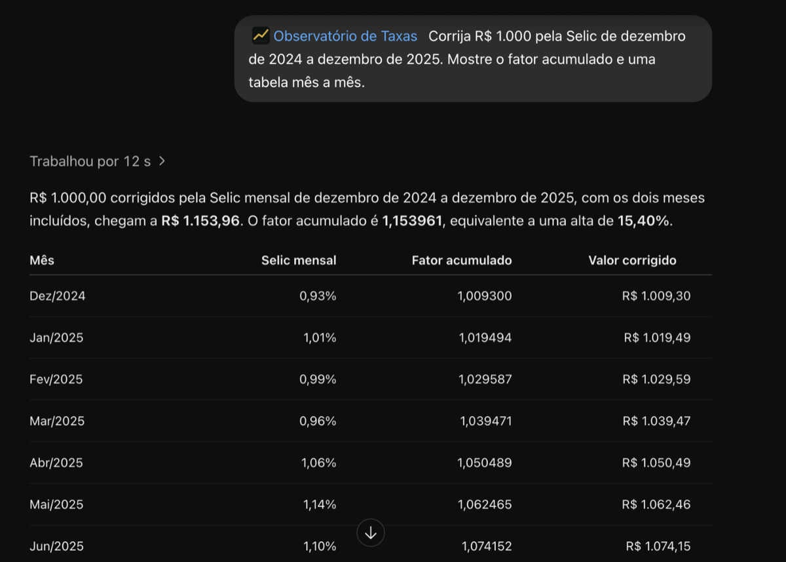
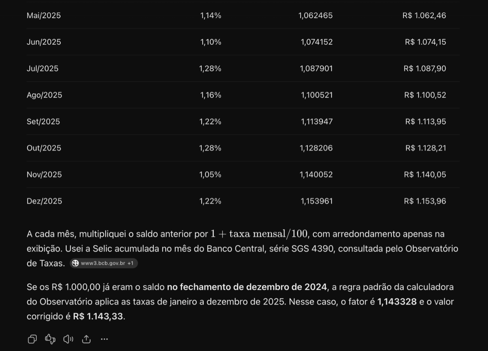
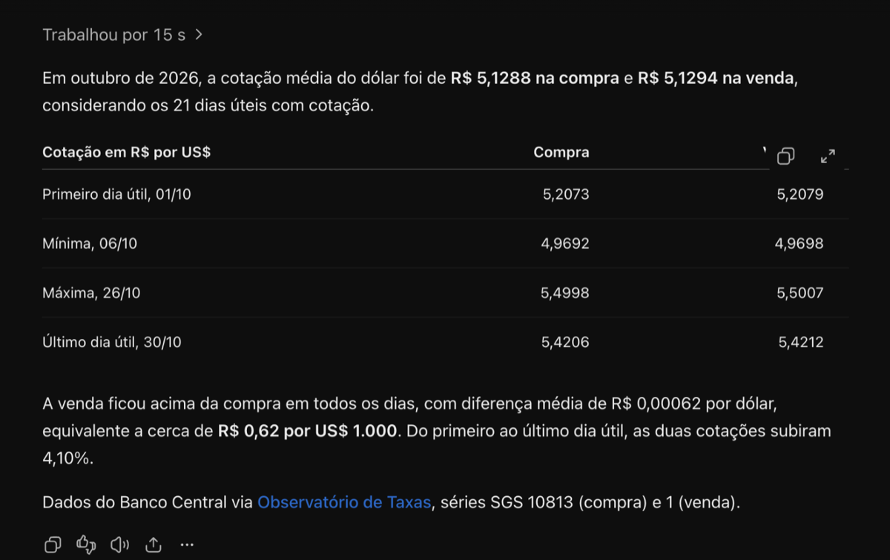
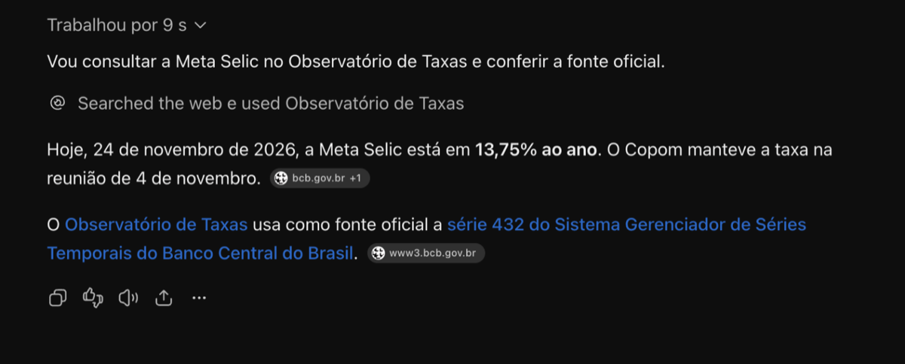
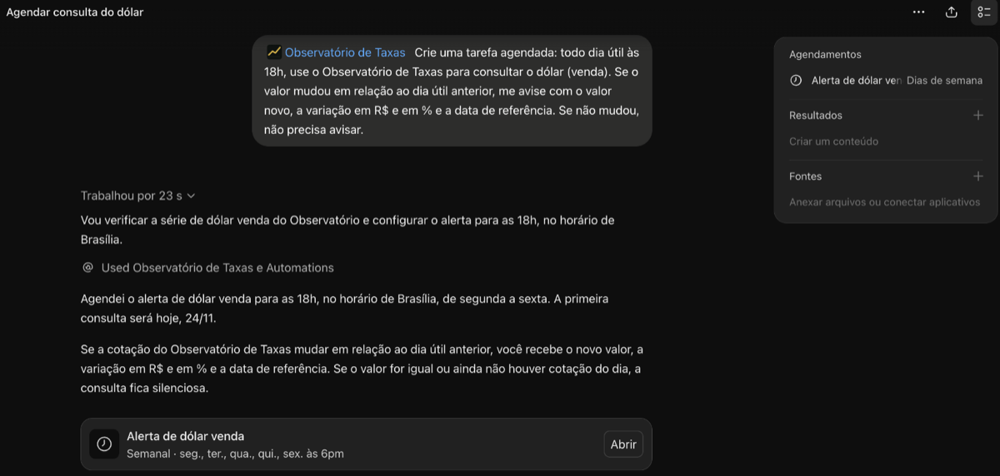

TRANSPARÊNCIA
O Observatório de Taxas e o plugin são projetos da própria LBP Tecnologia, que publica este blog. Não há link de indicação neste texto. As telas foram capturadas em 24 de novembro de 2026 numa conta real do ChatGPT. Os números mudam a cada coleta e as respostas do ChatGPT podem variar de uma conversa para outra.
RESUMO EM 5 LINHAS
- O plugin Observatório de Taxas deixa o ChatGPT consultar indicadores do Banco Central com a fonte citada na resposta.
- Para usar, abra a página do plugin (abre em nova aba) e chame-o com
@Observatório de Taxasno começo da pergunta. - Ele responde último valor, série histórica, correção de valores e comparação entre dois indicadores. Todas as ferramentas são só de leitura.
- Hoje 16 das 25 séries do Observatório estão no plugin. IPCA, IGP-M e outras séries do IBGE e da FGV ficam de fora até a licença de redistribuição ser confirmada.
- Com uma tarefa agendada do ChatGPT, o plugin pode avisar você todo dia útil quando o dólar mudar.
1. O que o plugin faz
Quando alguém pergunta a Selic para um assistente de IA, a resposta costuma vir sem data e sem fonte.
O plugin resolve isso ligando o ChatGPT ao Observatório de Taxas (abre em nova aba), que coleta as séries do SGS, o Sistema Gerenciador de Séries Temporais do Banco Central, a cada 6 horas. Em vez de lembrar um número do treinamento, o ChatGPT consulta os dados guardados no Observatório. A resposta traz o código da série, a data de referência e a data da coleta.
O plugin tem quatro ferramentas, todas só de leitura:
- Último valor de um indicador, como a Meta Selic ou o dólar do dia.
- Série histórica entre duas datas.
- Correção de um valor por um índice mensal, com a memória de cálculo mês a mês. A fórmula é a mesma da calculadora do site (abre em nova aba).
- Comparação entre dois indicadores no mesmo período.
2. Como ativar
Abra a página do plugin no ChatGPT (abre em nova aba) já com a sua conta logada. Você também chega lá pelo menu Plugins da barra lateral, procurando por “Observatório de Taxas”. A página mostra três perguntas de exemplo, e clicar em qualquer uma delas já abre uma conversa usando o plugin. O botão Testar no chat abre uma conversa vazia com o plugin selecionado.

3. Como chamar o plugin numa conversa
Em qualquer conversa, digite @Observat na caixa de texto e escolha
Observatório de Taxas · Indicadores do Brasil na lista que aparece. O nome vira uma
etiqueta colorida, e o que você escrever depois dela é a pergunta. Sem a menção, o ChatGPT pode
responder por conta própria ou buscar na web, e aí a fonte deixa de ser o Observatório.

4. Perguntas que funcionam bem
Valor de hoje, com a fonte
A pergunta mais simples é também a mais útil para conferir uma notícia: “Qual é a Meta Selic hoje e qual a fonte?”. A resposta traz a taxa, a data e o código da série no SGS, com link para a página do Banco Central.

Correção de um valor, mês a mês
Para corrigir um valor, diga o índice, o valor e o período, e peça a tabela: “Corrija R$ 1.000 pela Selic de dezembro de 2024 a dezembro de 2025. Mostre o fator acumulado e uma tabela mês a mês.” O plugin usa a Selic acumulada no mês (série 4390) e devolve o fator de cada mês, o que permite refazer a conta numa planilha.


Repare no último parágrafo. A pergunta “de dezembro de 2024 a dezembro de 2025” tem duas leituras, e o ChatGPT mostrou as duas:
| Leitura do período | Meses aplicados | Fator | Valor corrigido |
|---|---|---|---|
| Dezembro de 2024 incluído | dez/2024 a dez/2025 (13) | 1,153961 | R$ 1.153,96 |
| Valor no fechamento de dezembro de 2024 (regra da calculadora do site) | jan/2025 a dez/2025 (12) | 1,143328 | R$ 1.143,33 |
a diferença de R$ 10,63 é a Selic de dezembro de 2024 (0,93%) aplicada ou não
Para não depender da interpretação, diga na pergunta se o mês inicial entra. Por exemplo: “o valor era devido no fim de dezembro de 2024” ou “inclua a taxa de dezembro de 2024”.
Comparação entre duas séries
A comparação serve para ver duas séries lado a lado no mesmo período. Em “Compare dólar de compra e de venda em outubro de 2026”, o plugin buscou as duas cotações PTAX e o ChatGPT montou a tabela com o primeiro dia útil, a mínima, a máxima e o último dia útil.

Outras perguntas que rendem boas respostas:
- “Quais indicadores você consegue consultar?” lista as séries disponíveis no plugin.
- “Como a Meta Selic variou de janeiro a novembro de 2026? Mostre as datas das mudanças.”
- “Qual foi o dólar PTAX de venda no último dia útil de cada mês de 2026?”
- “Compare a Selic acumulada no mês com a TR em 2025.”
5. Como conferir de onde veio o número
Acima de cada resposta aparece uma linha como “Trabalhou por 9 s”. Clique nela para abrir o registro do que o ChatGPT fez. Ali aparece se ele usou o Observatório de Taxas, se também buscou na web, e em que ordem.

Quando a resposta mistura web e plugin, o número que veio do Observatório é o que cita a série do SGS. Para conferir por fora, abra a página do indicador no Observatório (abre em nova aba) ou procure o código da série no SGS do Banco Central (abre em nova aba).
6. Dica de automação: alerta diário do dólar
As tarefas agendadas do ChatGPT executam um pedido sozinhas num horário fixo e notificam você com o resultado. Combinadas com o plugin, elas viram um alerta de câmbio sem planilha e sem robô próprio. Abra uma conversa, mencione o plugin e escreva:
@Observatório de Taxas Crie uma tarefa agendada: todo dia útil às 18h, use o
Observatório de Taxas para consultar o dólar (venda). Se o valor mudou em relação ao
dia útil anterior, me avise com o valor novo, a variação em R$ e em % e a data de
referência. Se não mudou, não precisa avisar.
copie e cole no ChatGPT · ajuste o horário ou troque “dólar (venda)” por outro indicador

Três detalhes explicam o formato do pedido:
- Por que 18h. O dólar do Observatório é a PTAX, que o Banco Central publica uma vez por dia útil, no início da tarde. O Observatório coleta às 3h, 9h, 15h e 21h de Brasília, então às 18h a cotação do dia já está lá. Consultar de hora em hora só repetiria o mesmo valor.
- Por que “se não mudou, não avise”. Sem essa condição você recebe uma notificação todo dia, mesmo quando nada mudou, e o alerta perde o valor.
- Feriados. O ChatGPT agenda por dia da semana e não conhece o calendário bancário, então a tarefa roda também em feriado. Nesses dias o Banco Central não publica cotação nova e a tarefa fica em silêncio.
O mesmo modelo serve para outros indicadores. Um exemplo é avisar quando a Meta Selic mudar, consultando no dia seguinte a cada reunião do Copom. Tarefas agendadas dependem do plano da sua conta no ChatGPT.
7. Limites
- Não é tempo real. Os dados são coletados a cada 6 horas. Para cotação intradiária, o plugin não serve.
- Nem toda série está no plugin. IPCA, IPCA-15, INPC, IGP-M, IGP-DI, taxa de desocupação e as duas séries de CDI ficam suspensas até a confirmação dos termos de redistribuição com IBGE, FGV IBRE e B3. Elas continuam no site do Observatório (abre em nova aba).
- A data de divulgação oficial não é registrada. O plugin informa a data de referência e a data da coleta.
- O ChatGPT ainda pode errar ao explicar. O número vem do plugin, mas o texto em volta é do modelo. Confira a série citada quando o valor for usado num contrato.
- Não é recomendação financeira nem orientação jurídica. Quem reajusta um contrato deve usar o índice e o período que o contrato prevê.
Fontes e referências
- Plugin: Observatório de Taxas no diretório de plugins do ChatGPT (abre em nova aba), conferido em 24/11/2026.
- Servidor do plugin: pasta servidor_mcp do repositório (abre em nova aba), com o catálogo das séries expostas e suspensas.
- Página do Observatório sobre a integração: observatoriodetaxas.tec.br/mcp (abre em nova aba).
- Banco Central do Brasil: Sistema Gerenciador de Séries Temporais (abre em nova aba). Séries citadas: 432 (Meta Selic), 4390 (Selic acumulada no mês), 1 (dólar venda) e 10813 (dólar compra).
- Como o Observatório é construído: arquitetura em Python, Git e dados públicos, neste blog.
Perguntas frequentes
O plugin Observatório de Taxas é pago?
Não. O plugin e o Observatório são gratuitos e não pedem cadastro. O uso do ChatGPT segue o plano da sua conta.
Como faço o ChatGPT usar o plugin?
Digite @Observat na caixa de texto, escolha Observatório de Taxas na lista e escreva a pergunta depois da etiqueta. Também dá para começar pela página do plugin, no botão Testar no chat.
Por que o plugin não responde o IPCA ou o IGP-M?
Essas séries são produzidas pelo IBGE e pela FGV IBRE, e a redistribuição automatizada ainda não foi confirmada com os produtores. Por isso estão suspensas no plugin. Elas continuam disponíveis no site do Observatório e nos sites dos produtores.
De quanto em quanto tempo os dados são atualizados?
O Observatório consulta o SGS do Banco Central a cada 6 horas, às 3h, 9h, 15h e 21h de Brasília. Um valor só muda quando o Banco Central ou o produtor publica um número novo.
Como cancelo o alerta diário do dólar?
Abra Agendado na barra lateral do ChatGPT, escolha a tarefa Alerta de dólar venda e pause ou apague.
SOBRE O AUTOR
LBP Tecnologia
Consultoria de São Paulo que constrói plataformas de dados na AWS, painéis auditáveis e sistemas web para empresas. O responsável técnico do Observatório de Taxas e do plugin é Leandro Borges Pereira, fundador da LBP. A tese da casa é prova, não promessa.